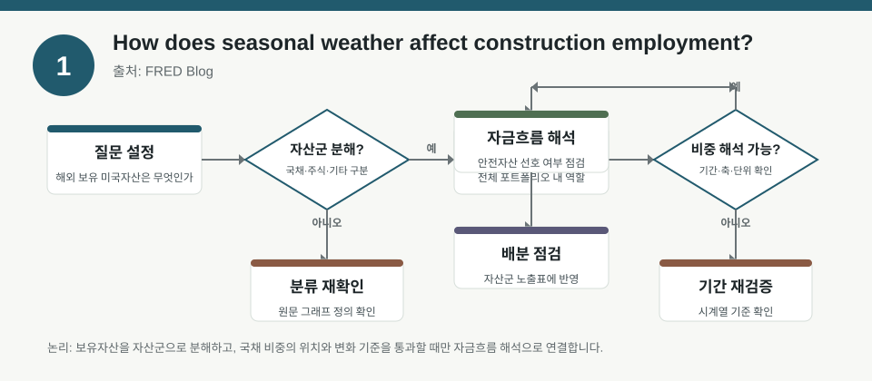
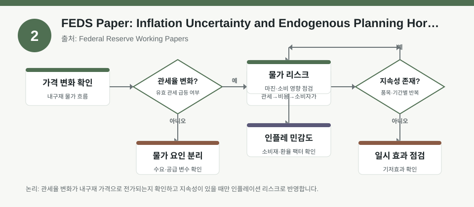
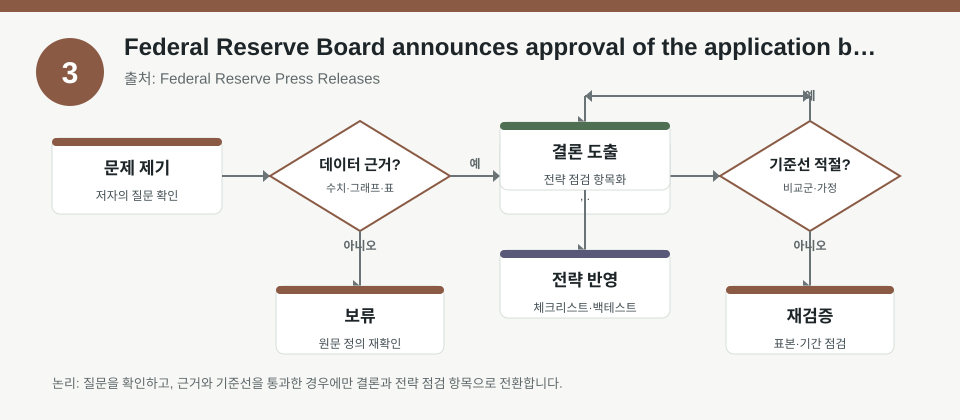

핵심 요약
- 결론: 이번 자료들은 고용의 계절성, 인플레이션 불확실성, 금융기관 인허가를 통해 미국 경기와 위험선호를 해석하는 데 도움을 주며, 한국 투자자는 KOSPI/KOSDAQ 업종 노출과 금리·환율·정책 리스크 점검에 활용할 수 있습니다.
- 원칙: 본문 수치는 원문 메타데이터만 기준으로 요약하고, 정량값·인과관계·정책 효과는 원문에서 재검증해야 합니다.
주목할 자료
| 번호 | 자료 | 출처 | 원문 | 핵심 내용 | 데이터 포인트 | 리스크/한계 |
|---|---|---|---|---|---|---|
| 1 | How does seasonal weather affect construction employment? | FRED Blog | 원문 보기 | 건설 고용이 날씨·계절 요인에 따라 달라질 수 있음을 FRED 시각으로 해설 | 계절성, 날씨 민감 업종, 고용 변동성 점검 | 메타데이터에 구체적 통계가 없어 계절 효과의 크기와 기간은 원문 확인 필요 |
| 2 | FEDS Paper: Inflation Uncertainty and Endogenous Planning Horizons | Federal Reserve Working Papers | 원문 보기 | 물가 불확실성이 기업의 가격 설정 계획기간을 바꾼다는 모형 연구 | 인플레이션 불확실성, 계획기간 선택, 가격결정 마찰 | 모형 기반이므로 실증 범위·가정·식별전략을 원문에서 검수 필요 |
| 3 | Federal Reserve Board announces approval of the application by Coastal Bend Bancshares, Inc. | Federal Reserve Press Releases | 원문 보기 | 연준의 금융기관 신청 승인 공시로 규제·은행업 이벤트를 확인 | 인허가, 금융규제, 지역은행 이벤트 | 개별 승인 공시는 시장 일반화가 어렵고, 대출·자본·지역 노출 영향은 추가 확인 필요 |
자료별 상세
1. How does seasonal weather affect construction employment?

- 핵심: 건설 고용은 경기만이 아니라 계절·날씨 요인에도 영향을 받아, 월별 고용 해석 시 계절조정과 지역 편차를 함께 봐야 합니다.
- 데이터 포인트: 계절성, 날씨 민감도, 고용 변동성은 건설 관련 업황 해석의 기본 변수로 점검할 수 있습니다.
- 리스크: 메타데이터만으로는 어떤 지역·기간·고용지표를 썼는지 확인되지 않으므로 원문에서 표본과 계절조정 방식을 검증해야 합니다.
- 투자전략 반영 예시: 한국 투자자는 KOSPI/KOSDAQ에서 건설·기계·자재·리츠 노출을 점검할 때, 국내 계절성보다 미국 경기와 날씨 요인이 동시에 작동하는지 체크리스트로 삼을 수 있습니다.
- 실행 예시: 월별 건설 고용 발표를 볼 때 계절조정 전후 수치, 지역별 편차, 금리 민감 업종 반응을 함께 기록하는 점검표를 만들어 보세요.
2. FEDS Paper: Inflation Uncertainty and Endogenous Planning Horizons

- 핵심: 물가 불확실성이 커지면 기업이 가격을 더 멀리 내다볼지, 아니면 짧게 볼지 계획기간을 스스로 조정한다는 점이 핵심입니다.
- 데이터 포인트: 인플레이션 불확실성, 기업의 계획기간, 가격결정은 금리·원가·마진 민감 업종 해석에 연결됩니다.
- 리스크: 이 자료는 모형 연구이므로 실제 기업 행태를 얼마나 설명하는지, 캘리브레이션과 실증 검증이 있는지 확인해야 합니다.
- 투자전략 반영 예시: 한국 투자자는 화학·유통·음식료·소비재처럼 가격 전가와 재고 관리가 중요한 업종의 민감도를 볼 때, 인플레이션 기대와 변동성 체크를 포함할 수 있습니다.
- 실행 예시: 포트폴리오 점검표에 물가 서프라이즈, 기대인플레이션, 원가 전가 가능성, 환율 영향, 재고 회전율 항목을 추가해 업종별 스트레스 시나리오를 비교해 보세요.
3. Federal Reserve Board announces approval of the application by Coastal Bend Bancshares, Inc.

- 핵심: 연준의 승인 공시는 은행 인허가와 규제 승인 흐름을 보여주며, 개별 금융기관의 사업 확장이나 구조 변화 신호로 해석할 수 있습니다.
- 데이터 포인트: 금융규제, 인허가 이벤트, 지역은행 관련 정책 환경을 점검하는 자료입니다.
- 리스크: 단일 승인 사례만으로 은행 섹터 전반을 판단할 수 없고, 자본비율·자산건전성·지역경제 노출은 별도 확인이 필요합니다.
- 투자전략 반영 예시: 한국 투자자는 금융·증권·보험 업종의 규제 민감도를 점검할 때, 미국 지역은행 이벤트가 글로벌 크레딧 스프레드와 위험선호에 미치는 간접 영향을 체크리스트에 넣을 수 있습니다.
- 실행 예시: 은행주나 금융섹터를 볼 때 승인·합병·자본규제 뉴스, 예금 안정성, 신용비용, 금리차, 지역 경기 노출을 함께 기록하는 템플릿을 사용해 보세요.
팩터·리스크·포트폴리오 관점
- 핵심: 세 자료 모두에서 공통적으로 중요한 것은 계절성·물가 불확실성·규제 이벤트처럼 “수익률에 간접적으로 작용하는 상태변수”를 포트폴리오 팩터로 분해해 보는 관점입니다.
- 검수: 실제 투자 판단 전에는 원문에서 표본 정의, 계절조정 방식, 모형 가정, 공시 범위, 정량 결과를 확인해야 하며, 여기서는 방향성만 요약합니다.
정리
- 결론: 이번 자료는 미국 경기와 정책 환경을 해석할 때 업종별 민감도와 데이터 해석 규칙을 함께 보라는 신호로 읽을 수 있습니다.
- 다음 확인: 원문에서 표본·정의·식별·수치가 어떻게 제시되는지 확인한 뒤, 한국 포트폴리오의 금리·환율·물가·규제 노출표와 대조해 보세요.